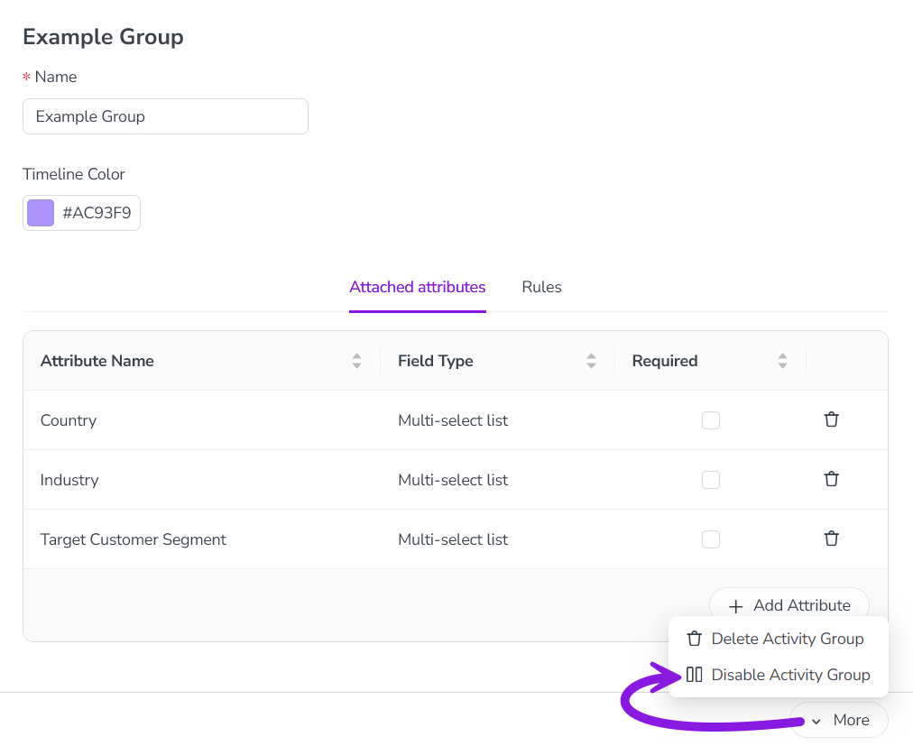
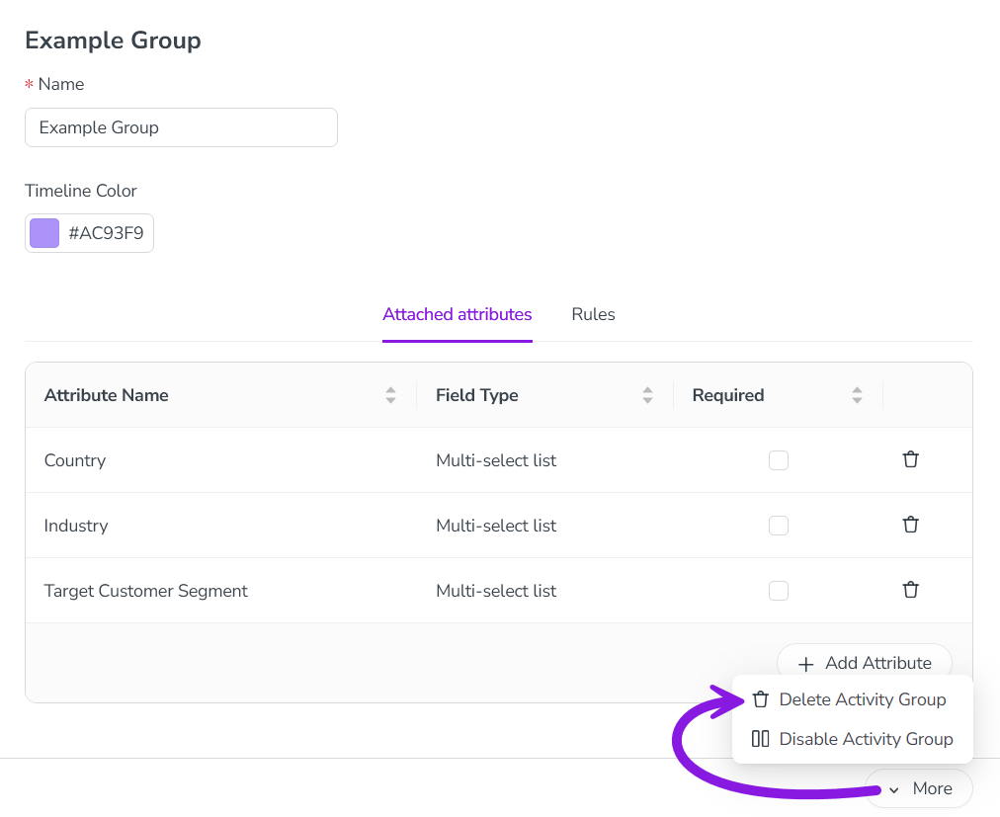

If you no longer need an activity type group, you have two options: you can either disable or delete the unneeded type group. Here's what each option does, and when you should use each one:
Disable an activity type group: When you disable an activity type group, you can no longer add activity types to the group. However, as long as the activity types within the group are still active, users can continue to use these activity types to create new activities. We recommend using this option in most cases when you no longer need an activity type group, as it retains data for reporting purposes.
Delete an activity type group: Deleting an activity type group will permanently remove it from your Uptempo instance. You can only delete an activity type group if there are no more activities of the activity types that belong to the group, or any rules that involve the group. This means that, to delete an activity type group, you must first delete all activities within the group, and all rules related to the group. As a result, we recommend using this option only in cases where you no longer need any of the data associated with these activities. Otherwise, you should use the option to disable the group instead.
Disable an activity type group
In the Activities section, click Settings:
In the Activity Configuration menu, click Activities > Types & Groups.
In the list panel on the left, click on the activity type group you want to disable. The selected activity type group's settings are shown in the settings panel on the right.
In the settings panel, click More > Disable Activity Group: 
The change is saved automatically, and takes effect immediately.
The activity type group is disabled, and is displayed in the list panel with "(disabled)" after its name.
To re-enable a disabled activity type group, follow the same steps, then select More > Enable Activity Group in step 4.
Delete an activity type group
In the Activities section, click Settings.
In the Activity Configuration menu, click Activities > Types & Groups.
In the list panel on the left, click on the activity type group you want to delete. The selected activity type group's settings are shown in the settings panel on the right.
In the settings panel, click More > Delete Activity Group: 
The change is saved automatically, and takes effect immediately.
The activity type group is deleted, and is removed from the list panel.
 Settings:
Settings: